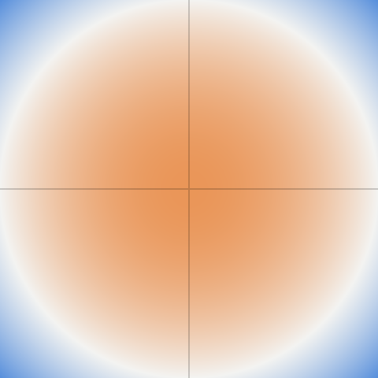
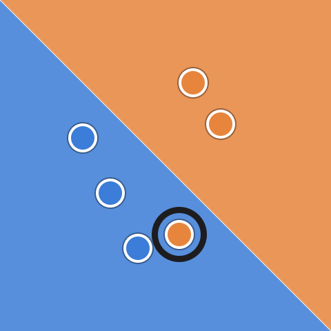
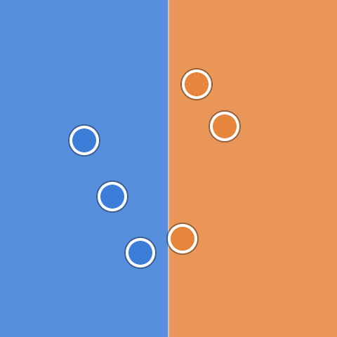
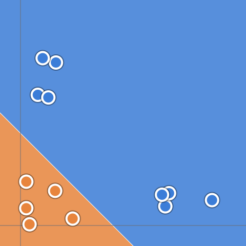

Chapter 2
A First Model
In this chapter we develop a program that can tell two kinds of points apart. We begin with a single neuron and then build, from layers of neurons, a small network that finds its own weights.
Two Kinds of Points
Let there be a plane with the coordinates
and , each from -6 to +6. Into this plane we put
points of two kinds: orange and blue. In the programs the kind of a
point is represented by a number: 1 for orange and
-1 for blue.
A model is a function that computes, from the coordinates and of a place in this plane, a guess of the kind of a point at that place: a value between -1 and +1. At -1 the model is sure that a blue point lies there; at +1 it predicts an orange one with certainty. Values in between express uncertainty: the sign says which kind the model leans to, and the nearer the value is to 0, the less sure it is; at 0 it cannot decide.
We could write such a function any way we like, for example

It is +1 at the right edge, -1 at the left and 0 on the upright axis: on the right it guesses orange, on the left blue, and the nearer the middle, the less sure it is. Or

It is +1 at the centre, −1 in the four corners, because there , and 0 on the circle of radius 6 around the centre, where . Whether such a function can predict the points' kinds well depends on where they lie: the first suits points that are orange on the right and blue on the left, the second an orange disc in a blue ring.
Machine learning, on the other hand, does not make the formula up. It fixes only its general form, a formula with numbers left open, the parameters. In the second example the 36 could be such an open number, , and would decide how large the orange disc is; where the formula falls below −1, it counts as −1. Which values the parameters get, a program finds out from examples, points whose kind is known. Finding them is what this book calls learning, and a function with its parameters found a trained model.
One Neuron
The simplest form of such a function is a neuron. It multiplies each of its inputs by a number of its own, its weight, adds them up and adds one more number, its bias:
The result is called the neuron's weighted sum. Where it is positive the neuron guesses orange, where it is negative, blue. The points where is exactly 0 form a straight line, so a neuron parts the plane by a line: the weights turn it, the bias moves it.
Now let us try to adjust the neuron so that it can tell, as well as possible, the colour of six points we scatter over the plane at will: three orange and three blue. We begin with the weights 1 and 1 and the bias 0:

Five of the six lie on the right side; the one in the ring is orange but lies below the line. With the line turns to the upright axis, and all six are right:

Changing the weights and the bias step by step until the guesses are right is the essence of what we shall call learning.
How Wrong
To change the weights by itself a program needs a measure of how wrong the neuron is. This measure is a number that gets smaller as the neuron gets better. Counting the wrong guesses does not serve: a small change of a weight usually changes no guess at all, so the count does not say which way to turn.
So we first map the weighted sum to a number between −1 and 1 by a smooth function, here the hyperbolic tangent:

With this function the model can answer as the beginning of the chapter asked: near +1 or -1 where it is sure, near 0 where it is not. Such a function we shall call the neuron's activation function, and its answer for a particular point of the plane. Now the answer can be compared with the kind the point really has:
is the loss of one point: 0 where the answer is exactly the kind, larger the further it is from it, and every small change of a weight changes it a little. The mean of the losses of all points is the neuron's loss, and that is the measure we were looking for.
The hyperbolic tangent is not the only possible activation function. In large networks one mostly takes an even simpler function today, ReLU: , that is itself where is positive and 0 elsewhere. Its slope is always 1 for positive , while that of tanh becomes nearly 0 far out. What that means for learning shows in the next section.
Downhill
So the loss of our neuron is a function of the three values , and . Now we want to find the values for which it becomes as small as possible. Trying every combination is out of the question: each of the three values can be any number, so there are infinitely many. Even if we tried only 100 numbers for each value, that would be , a million combinations, and for each we would have to compute the loss over all points. For three values a computer still manages that, but the network for XOR that we build later already has 13 numbers and so combinations, and large networks have millions of weights. So we begin with some values and move from there step by step in the direction in which the loss falls fastest, with all three values at once. Which direction that is can be read off each value separately: how much does the loss change when the value changes a little? That is the partial derivative of the loss with respect to that value, for written . It is partial because only this one value changes while the others are held fixed; the round instead of a marks that.
The loss does not depend on directly. It depends on the answer , the answer on the sum , and the sum on . Each link of that chain has a derivative that is easy to work out:
How much does the loss change when the answer changes? , the derivative of .
How much does the answer change when the sum changes? , the derivative of tanh.
How much does the sum change when changes? , because is multiplied by .
The chain rule says that the derivative of the whole chain is the product of the derivatives of its links:
For the last factor is , for the bias it is 1. Added up over all points and divided by their number, these partial derivatives are the gradient: the direction in which the loss rises fastest. One step of gradient descent moves each of the three values a little the other way,
where the small number is the learning rate.
And when does one stop? When the loss is small enough, or when it hardly falls any more. The pages of this chapter stop as soon as the loss is below 0.02 or has fallen by less than 0.0001 over a hundred steps. Such a rule is called a stopping criterion.
Try the start values as well (the page with these values): then the neuron hardly moves, and after a hundred steps the page stops, since the loss no longer falls. Nearly all points lie on the wrong side, and far from the line, where tanh is nearly ±1 and hardly rises any more. Since the factor is nearly 0 there, so is the gradient: a neuron that is sure and wrong hardly learns. This is called saturation, and it is why one begins with small weights.
Better Inputs
Our neuron parts the plane by a line. But some arrangements of points cannot be parted by a line, for example a disc of orange points inside a ring of blue ones: every line then has orange and blue on both sides.
What the neuron lacks is not skill at sums but the right view of the points. Let us give it the squares of and as its inputs instead:
With and , say, is 0 exactly where , on the circle of radius 3 around the centre. Inside, is positive, outside negative:

Why can the neuron do this all of a sudden? Let us call its new inputs and . Then is a straight line again, only not in the plane of and but in that of and . Drawn there, the disc lies near the origin and the ring further out, and a line parts them:

So the neuron still draws a line, but a line in the inputs it is given; on the plane of the points it becomes a circle. Choosing what a model sees is called feature engineering, and good inputs can make a hard problem easy.
Backpropagation
How does a hidden neuron learn? Its weights are as far from the loss as can be, behind the output neuron. The chain rule still works, with a chain one link longer. The clever part is the order in which it is computed.
First everything is computed forward, as before: each hidden neuron's answer , then the output's sum and its answer . Then backward. The output neuron's share of the error, the loss by its sum, is the familiar
and its weights' derivatives follow from it as for a single neuron: for the weight that reads hidden neuron . Hidden neuron reaches the loss through that weight, so its answer's slope is , and through its own tanh its share of the error becomes
From there its weights are once more a single neuron's: , and for its bias. The error is handed back through the network layer by layer, each layer's share computed from the share of the layer after it. That is backpropagation, and it is the whole secret of how networks of any depth learn.
The hidden neurons on the page start from different weights on purpose. Had they all started alike, they would answer alike, get the same gradient in every step and stay alike forever, three copies of one line. That is why a network usually starts from random weights.
A network needs nothing more to learn, however many layers it has: compute forward, hand the error back, move each weight a little against its gradient.
The Field
The networks in our boxes were small and each built for one task. The field is a page on which you put a network together yourself and watch it learn. You choose the points, the inputs, how many hidden layers it has and how many neurons in each, and how it learns. It computes exactly as the last sections derived. At the top of the page lies a bar with the buttons. Below it stand three parts side by side, from left to right the data, the network and the output; on a narrow screen they stand one below the other. The picture shows the page with the spiral, after a little over 2000 steps.

- The bar
Pause stops the network; the same button is then called Learn and lets it learn on. While it is stopped, One step takes exactly one step of gradient descent over all the points it learns from. Start again gives the network new random weights and keeps the points. Beside them the page counts the steps since the start.
The Learning rate is the one from the section “Downhill”, to choose from 0.001 to 3. Under Activation function there are four to choose from, for the neurons of the hidden layers: the hyperbolic tangent, ReLU, the sigmoid function , which runs between 0 and 1 instead of between −1 and +1, and none. Without an activation function each hidden neuron simply hands on its weighted sum, and the whole network, however many layers it has, draws only one line. The output neuron always answers with the hyperbolic tangent. Regularization (L2) is explained in the next section.
The Speed says how many steps the network takes between two pictures, in five levels from 1 to 100. The page draws a picture every 30 milliseconds at most.
- The data
Five small pictures choose the points: Circle, a disc inside a ring; XOR, the four quarters of the plane, the kind by the sign of ; Clouds, two heaps around and ; Spiral, two arms wound into each other; and Your own, an empty plane. Into it you put points yourself, an orange one with a click, a blue one with a shift-click or a right-click. For the other four the page draws 300 points, half of each kind.
The Noise slider moves each point at random, up to 50 %, so that the kinds reach into each other; for the clouds it makes the heaps wider instead. New points draws the same arrangement anew. A change of data only exchanges the points; the network learns on with the weights it has.
- The network
The network stands in columns, from left to right in the order in which it is computed. The first column holds the seven possible inputs: , , , , , and . You know the squares from the section “Better Inputs”; new are the sines of the two coordinates, which go up and down a little less than twice across the plane. A click on an input gives it to the network or takes it away. One taken away is pale and struck through, and one always stays.
Then come the hidden layers, each a column. With − and + above the network you take a layer away or add one, up to six; with − and + above a column, a neuron of that layer, up to eight. Without a hidden layer the network is a single neuron as at the beginning of the chapter. The last column is the output neuron.
Each neuron, each input too, is a small square. It shows what the neuron answers over the whole plane, orange where the answer is positive, blue where it is negative, like our pictures for XOR. The lines between the squares are the weights: orange positive, blue negative, the thicker, the larger their size. On each line a light runs from left to right, the faster, the stronger the weight. When the network's shape, its inputs or its activation function change, it starts over from new random weights.
- The output
At the top stand two numbers, the Training loss and the Test loss, below them their course since the last start: the training loss solid, the test loss dashed. What training and test points are is explained in the next section.
The large picture is the plane, from −6 to 6 both ways, with all the points. Beneath them lies the output neuron's answer at every place, the stronger the colour, the nearer to +1 or −1. Only the decision shows instead only on which side of zero the answer lies, and with it the border the network draws. Show the test points shows and hides the ringed points.
Below the three parts the page says in a few sentences what happens, and at the very bottom the program can be unfolded that the last section of this chapter is about. The links in the boxes set the page up to fit. What they choose stands in the address after the #. Without such settings the page starts with the circle, the inputs and and two hidden layers of four and two neurons.
Generalization
So far the network has learned from all the points, and we have only asked how well it meets those very points. But a model is meant to place points rightly that it has never seen as well. That is why the field splits its points into two halves. The network learns from the one: these are the training points, and their mean loss, the training loss, is the loss gradient descent makes smaller. The other half, the test points, drawn with a ring, the field holds back: the network never learns from them. Their mean loss, the test loss, says how well the network generalizes.
When the data is noisy and the network large, the two losses part ways. The network learns the training points ever better, their noise included, and draws borders around single stray points. The test loss then stops falling and rises again. That is overfitting. One remedy is regularization: for every weight a penalty is added to the loss. is a small number we choose. Large weights become expensive. The penalty's derivative is , so every step of gradient descent pulls every weight a little towards zero. Smaller weights give smoother borders, because a neuron with small weights goes over from −1 to +1 only slowly. Because the penalty is the square of the weights, this form is called L2 regularization.
The Field's Program
Behind the page stands one Scaly program,
field.scaly, built for WebAssembly. It is the
program of the page with the network for XOR
grown up: everything the page lets you set, and the backpropagation
that network_step writes out for a network with
one hidden layer, here in loops over any number of layers. The
numbers the page shows it reads straight out of the program's
memory, without a copy. The picture of the plane is a
for over its 6400 points, which Scaly spreads over
the cores of the machine by itself. The same program also runs
without the page, on the command line: field 0 500
lets the network with hidden layers of four and two neurons learn the
circle for 500 steps, writes down the two losses every hundred steps
and at the end how many of the 200 test points it places rightly. Its
source is
on GitHub.
Everything this chapter derived by hand, the chain rule through every link and the gradient of every weight, a program can derive too. That is the subject of the chapters ahead: first how to write the computation for all points at once, with matrices, and how Scaly holds these many numbers and computes with them fast; then a tape that records the forward computation and plays it back to get every derivative.